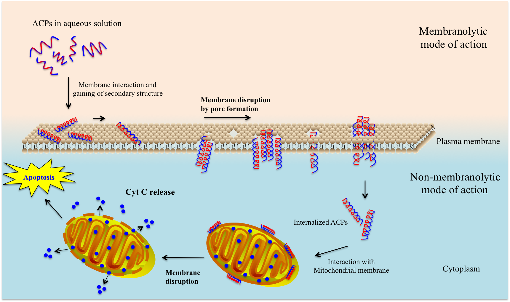

Finding cure to cancer has long be a hot area of research. Before innovate treating methods,namely peptide treatment, were brought up, traditional methods hold the lion share in medicine.Therapies from surgical removal to radiation were doctors first choices. However, while remain effective facing cancer cells, chemotherapy, radiation therapy can cause massive collapse damagesto healthy organs as well, according to national cancer institute in USA, side effects of radiationtherapy includes mouth sores, nausea, and hair loss. (Cancer Treatment, 2015) To solve thisproblem, people are focusing on target delivering curing methods; peptides therapy becomes welcome for many research teams . The study on anticancer peptide research actually goes along way back in time . Researchers are finding more and more bio-active peptides against moreand more diseases and illness, while some of them even shows anti-cancer functions. mooney 2012 Anticancer peptides works in a rather simple way: peptides are small piece of proteins that are formby amino acids, which are in certain sequence. This gives data scientists room to improvise . Although, peptides act well facing cancer, discovering them still requires a lot of efforts andinvestment.  To test every peptides and see if they can be used as agents is expensive. So,here coming the idea of introducing machine learning into the business. The main idea is this:use algorithm to process peptides using information of their sequence, length or amino acidsfrequency, and develop a model to predict given unknown peptides. The outcome, which canbe wrong, also can be used as reference for lab researchers.In future experiments, researcherscan test the peptides on the list according to the possibility the model has given. The implements of these algorithms are ACP predictors.
According to the relevant study,benchmark is the crucial part to judge the reliability of prediction models.In order to benchmark better,we use two datasets in our study once used in ACPred-FL (http://server.malab.cn/ACPred-FL/) from which our study is inspired. For training, we use ACP500(Click And Download) including 250 positive and 250 negative peptides. For independent test set, we use ACP164 with 82 negative and 82 negative peptides.
Email:yili.lai@ucd.connected.ie